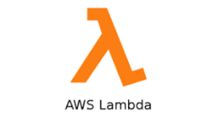
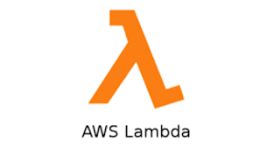

Companies I've Worked With

7.5+ YOE | Data Engineer | Cloud Architect | Governance Specialist
Role: Data Engineer


Impact: Boosted reporting efficiency by 30% through optimized data flow and transformation.
Role: ETL Administrator


Impact: Reduced downtime and improved data delivery reliability across business units.
Role: Data Engineering enaling Governance


Impact: Enhanced data discoverability and ensured regulatory compliance.
Role: Data Compliance Specialist


Impact: Strengthened data ownership enforcement and reduced unauthorized access incidents.
Role: Data Engineer


Impact: Delivered near real-time insights for strategic planning and market intelligence.
Role: DevOps/DataOps Engineer

 



Impact: Reduced resolution time by 40% and improved system reliability.
Role: Cloud Migration Engineer
Impact: Achieved cost savings and scalability improvements while modernizing the data integration stack.
Role: ML Data Engineer

Impact: Enhanced model accuracy and reduced data preparation time for data science teams.
Email: your.email@example.com
LinkedIn: linkedin.com/in/yourprofile
GitHub: github.com/yourusername